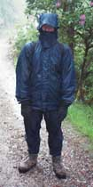
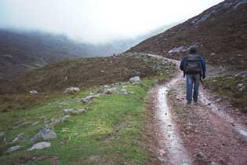

Kinlochleven to Fort William - Friday, June 1
At the end of the day we saw the weather forecast: "gale force winds, heavy rain, 32 degrees at 3000 feet". We could attest to the first two - the wind and rain were straight into our faces. As for the third, we weren't at 3000 feet, but our 40 degrees didn't feel much warmer.
We were walking with hordes of people. It looked as if no matter which day people had started, and no matter how fast or slowly they walked, they all finished at Fort William on this particular day. The horde, of course, included almost everyone we had met - the English threesome, the walking group, some Norwegians, a couple of Dutchmen - everyone!
|  |  | |
| Alida, at the start of the day, was as prepared as possible for the rain, but... | Andy unfortunately didn't have rain over-trousers or a hood on his jacket, so he was soon drenched and freezing. |
It was a long, wet day. For the first few hours there was no privacy, so when we came to a woods, dozens of people suddenly disappeared behind the trees! Because of the rain, lunch places were non-existant. Lots of people stopped in a couple of ruined farm buildings, but the buildings had no roofs! We found a pretty spot by a footbridge over a stream, got out our packed lunches, and were immediately attacked by midges! Toward the end of the day, where we were supposed to be seeing the enormous bulk of Ben Nevis, we saw only the bottom hundred or so yards. But even that was impressive! And needless to say, we were exuberant when we came to the "End of the West Highland Way" sign at the edge of Fort William.
We liked our guest house, which was part B&B, part studio. On the walls were paintings by the owner, who unfortunately was away for the weekend. For dinner, we went to McTavish's Kitchen. This is geared for tourists but pleasantly low-key. There's a floor show with bagpipes, accordion, and dancing. We thoroughly enjoyed the evening!
The next day we took the West Highland Line train back to Glasgow. The route starts by going north of Ben Nevis. Since the sun was shining brilliantly (in stark contrast with the day before!) the views were excellent. We passed by the edge of Rannoch Moor, and could look across it toward Glencoe. We went around the big horseshoe under Beinn Dorain where we had waited so long to see a train reappear. After that, we were near our path for a good while, and watched our eight wonderful days rewinding before our eyes!
| Previous Day | Home Page |